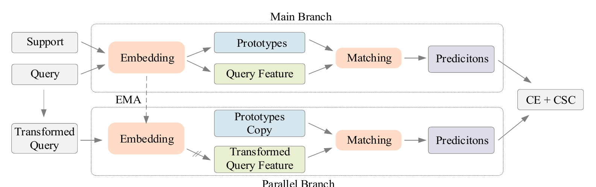

TIP
Meta-Exploiting Complementary Semantic Consistency for Cross-Domain Few-Shot Learning Promotion
Fei Zhou, Peng Wang, Lei Zhang, Wei Wei, Chen Ding, Guosheng Lin, and Yanning Zhang
IEEE Transactions on Image Processing, 35: 8543–8557. [Paper] [Code]